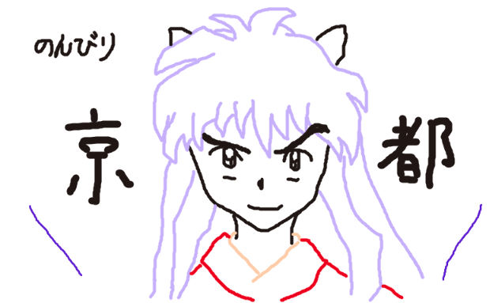
京都駅近辺散歩と焼き魚の日
＜京都駅＞
・チェックインして荷物を預ける。
<京都河原町駅>
・ランチ！夜のために消化のいいもの
★おすすめの候補1：京うどん：権太呂 本店
美味しそう。入り口と店内もかっこいい。行きたい
権太呂 本店<
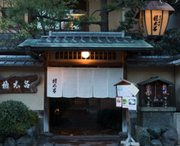
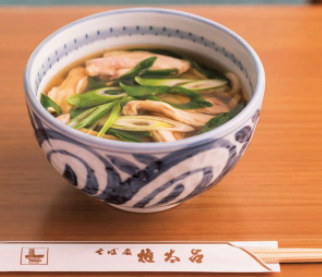
★おすすめの候補2：冨美家 （ふみや）
ここも美味しそう
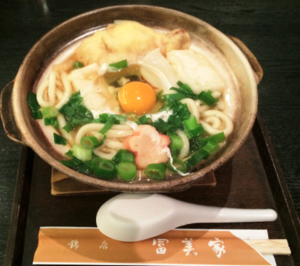
★先斗町
いい感じの道。道に面してる店は初見さんお断り感を勝手に感じる
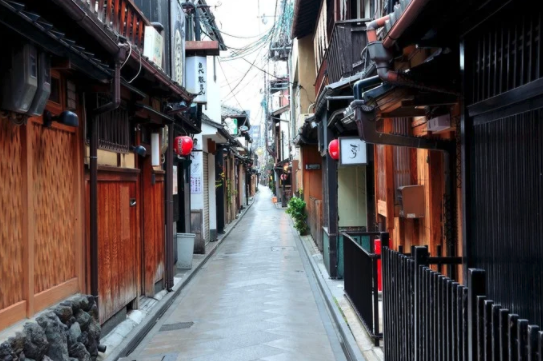
★錦市場
商店街。いろいろありそう
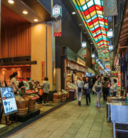
★本能寺
行ったことなくて、近いから時間があれば！
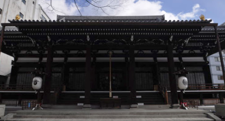
★マッチャ ハウス 抹茶館 京都河原町店
めっちゃ好きそう！並んでたら飲み物のテイクアウト
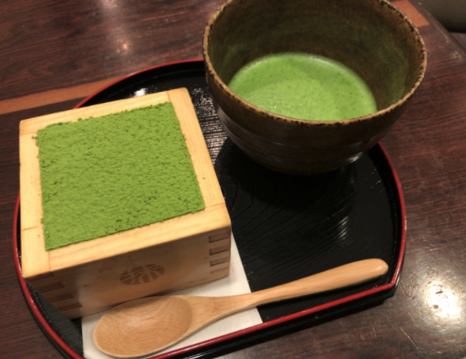
＜京都駅＞
・スイーツ＆明日の朝食 テイクアウト

★おすすめの候補1：プレスバターサンド 京都駅店（京都駅南北通路）
プレスバターサンドの抹茶味は京都限定らしい
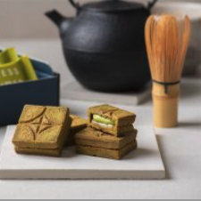
★おすすめの候補2：京洋菓子 ジュヴァンセル（JR京都伊勢丹）
チョコマドレーヌ好きそう。クッキー食べたい
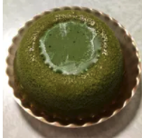
★おすすめの候補3：マネケン（JR京都駅店）
マネケンもある
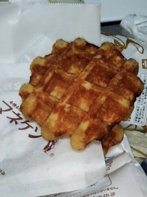
★おすすめの候補4：ケーニヒスクローネ（JR京都伊勢丹）
神戸発祥だけど、ここのは全部おいしそう。
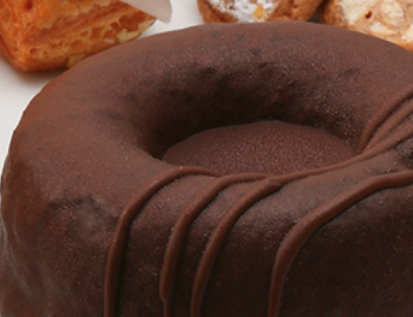
魚の西京焼き
栄寿庵
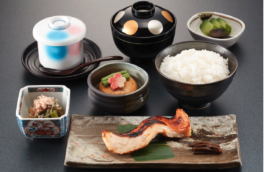
〜本日のちはやふる〜
・第20話：わがころもでは(仮)
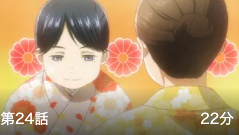